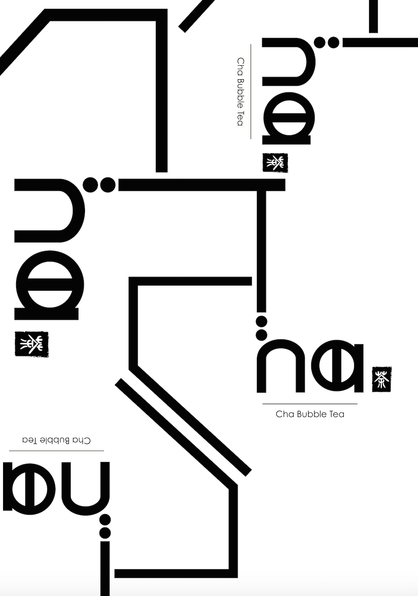
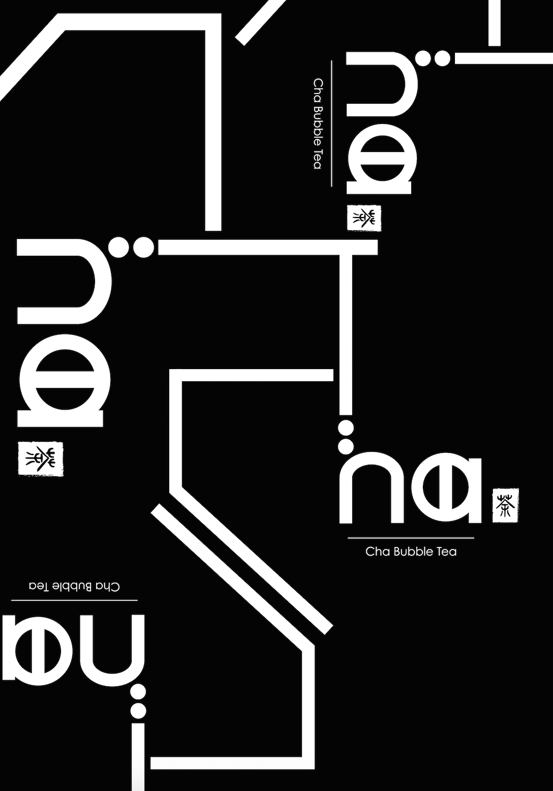

Company Logo Design
For this project, I designed a logo for a company that I came up with.
I designed a logo for a bubble tea shop. The reason why I use the word "Cha" is because "Cha" is the pronunciation of tea in Chinese. On the right side of the logo is a Chinese style seal with a Chinese word "茶"(tea). The rectangular shape and the two dots of the "h" represent a straw and bubbles.
-
White Version
-
Black Version
-
Black Patterns White Background
 -
White Patterns Black Background
